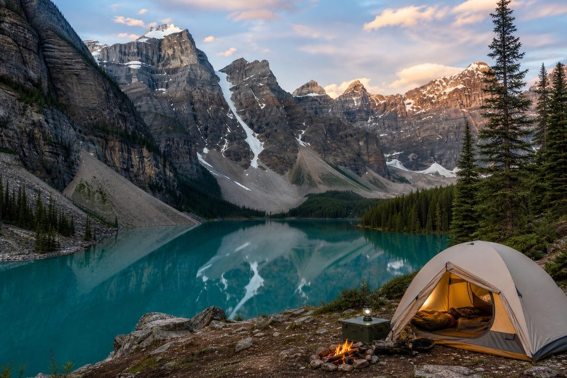

Asturias / León / Cantabria
Pozas del Sella y valles del oriente
Agua fría de montaña tras rutas cortas desde campings de valle.
PróximamenteNaturaleza · Agua
Charcas, pozas y tramos de río para combinar con una ruta o una noche de camping. Contenido en expansión — empieza por estas selecciones editoriales.
Asturias / León / Cantabria
Agua fría de montaña tras rutas cortas desde campings de valle.
Próximamente
Montaña
Tramos glaciares y lagos de origen alpino para el verano.
Próximamente
Combinar
Encuentra dónde pernoctar junto a ríos y lagos en el mapa.
Ver campings →